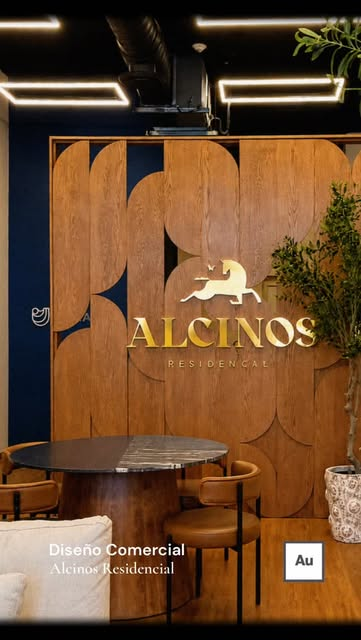
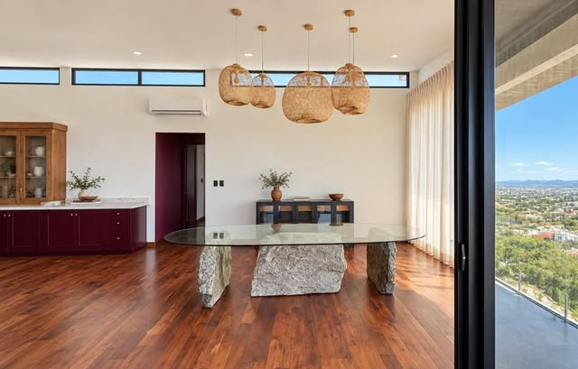
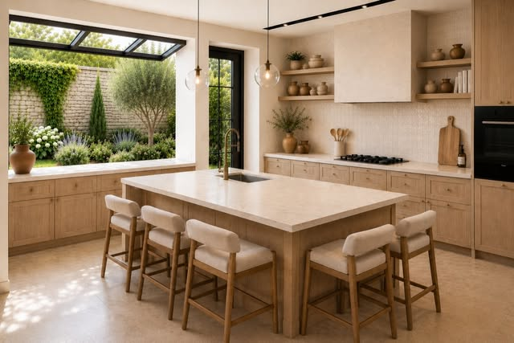

Un lugar para hacer avanzar tus casos.
Identidad YoDesarrollo. Una propuesta inspirada en los espacios y criterios de Aurum Arquitectos.

El diseño parte de cómo se trabaja.
El showroom Alcinos es la referencia principal: recibir clientes y trabajar en un mismo espacio, conservando orden y privacidad. Cabaña Mary y Casa Zara aportan materiales, luz y la relación con el exterior.

Dividir sin cerrar
Madera curva, fondo oscuro e iluminación cálida. Lo llevamos a la recepción y a la separación entre atención y trabajo.
Ver publicación de Aurum
Traer el entorno al interior
Piso de mezquite, piedra del terreno, cristal y luminarias de tejido. La mesa de decisiones toma esa combinación de peso y ligereza.
Ver publicación de Aurum
Encuentro y concentración
Un patio articula áreas que pueden convivir o funcionar por separado. Aquí organiza la circulación y da espacio entre los casos.
Ver publicación de AurumLa marca es YoDesarrollo.
Logotipo del menú de YoDesarrollo.mx. En el encabezado usamos la versión clara del repositorio corporativo.
“Si el espacio no corresponde con cómo trabaja la gente, se vuelve bonito pero inservible.”Aurum Arquitectos · Publicación del showroom Alcinos
Paleta propuesta para el interior a partir de las referencias. No se presenta como un manual oficial de marca. Conservamos el contraste claro/oscuro del sitio y el logotipo original.
Mi terreno · Caso
Su lugar será la mesa del caso: entrar, revisar qué sabe del terreno, corregir lo capturado y conocer qué necesita para avanzar.
Este bloque se detiene en el diseño.
Antes de conectar conversaciones y aprobaciones, revisamos contigo la distribución, los materiales y el ambiente. Las zonas son una propuesta; no ejecutan decisiones ni modifican tu caso.
Consultar la prueba anterior y el registro manual de uso